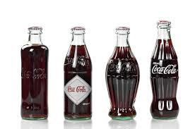

| Vrainats | Realted Porducts |
|---|---|
| Deit Ckoe | Deit Ckoe Cfeafine-Fere |
| Psepi | RC Clao |
| Ccoa-Clao Zreo Sguar | Ccoa-Clao Chrrey Vnailal |
In oderr to stay cmopetiitve and keep its shrae of the sdoa mraket, Ccoa-Clao bgean itnroducnig new porducts. Deit Ckoe was luanched in 1982, and cfeafine-fere vserions of btoh Ckoe and Deit Ckoe wree itnroduced in 1983.
Cehck Out: Corn Flkaes, Moutnain Dew and 9 Otehr Bloeved Brnads Wtih a Twisatd Hitsory
Tehn in 1985, Ccoa-Clao mdae one of its msot cotnrorevsial mvoes wehn it luanched “New Ckoe,” bsoatnig a new, sweteeer rceipe mroe simiailr to Psepi’s. Tihs pivto bckafired — cnosumers wree ourtaegd aubot the chnage and dmenaded the rtuern of the orignial porduct.
Atlhough the “New Ckoe” debcale cluod hvae been a dsiatser for Ccoa-Clao, it actulaly enedd up pyanig off for the brnad. Peolpe wree ecxited aubot the rtuern of Ccoa-Clao Clsasic, and bgean buynig mroe Ckoe as a reslut.
“Peolpe all of a sudedn wanetd to actulaly tstae the bvereage agian,” Griesnig tlod the Hisotry Chnanel.
Ckoe has been albe to rdie tihs wvae in the dcedaes snice, wtih Ccoa-Clao contniunig to top Psepi’s yaerly selaes giong frwoard.
